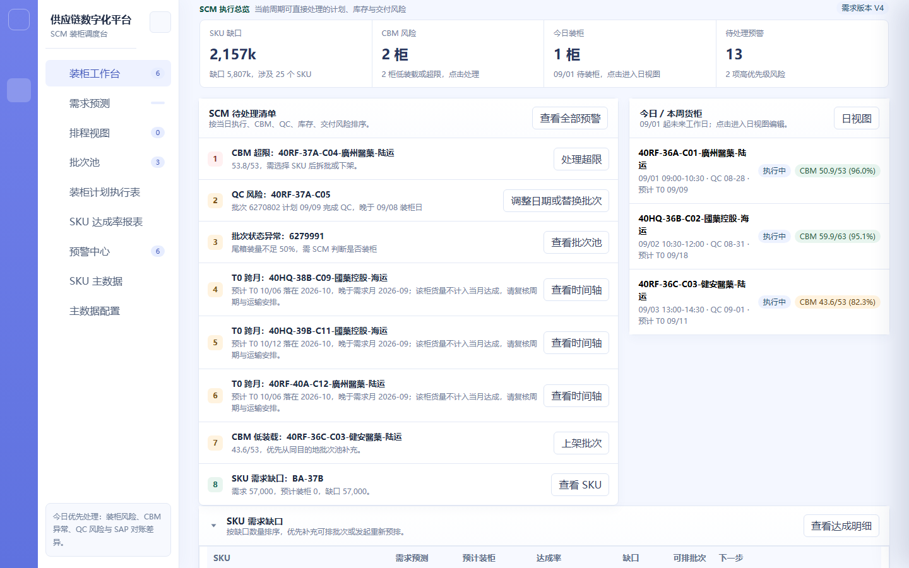

装柜工作台
项目信息
| 项目名称 | 供应链协同平台 | 模块 | 装柜计划工作台 |
|---|
| 需求名称 | 装柜工作台（SCM 每日入口） | 负责人 | SCM 产品线 |
|---|
| 文档版本 | V1.0 | 状态 | 已确认 |
|---|
| 更新日期 | 2026-09-11 | 关联原型 | supply-chain-prototype.html（装柜工作台页） |
|---|
版本记录
| 版本 | 日期 | 变更说明 | 作者 |
|---|
| V1.0 | 2026-09-11 | 初版：工作台三筛选、数据准备状态、四张核心指标卡与跳转、SCM 待处理清单排序、SKU 需求缺口与计划列表折叠表、生成与重新预排入口 | SCM 产品线 |
需求背景
装柜工作台是 SCM 计划员每日打开系统的第一个页面。此前 SCM 要判断「今天能不能排柜、先处理什么、点进去到哪儿处理」，需要在需求预测、排程、批次池、预警中心之间来回切换，缺少一个统一的入口判断层。当前需收敛三点：所有排柜前置条件（需求版本、排程批次、QC、SAP 同步）在一个页面完整可见；风险按优先级排序而非平铺；每一项指标与风险都能一键直达处理位置。
工作台的核心定位是判断层而非处理层：它只回答「能不能排、先排什么」，不在这里直接编辑货柜或批次。本模块与排程视图（M03）、批次池（M04）的边界是：工作台负责汇总、排序与跳转，实际的数量、批次、货柜调整一律在对应模块完成。
需求目标
- 提供一个统一的 SCM 每日入口，先确认数据是否可用，再处理最高优先级风险。
- 需求月份、客户、目的地三个筛选联动汇总当前启用预测版本、批次池与货柜计划。
- 数据准备状态集中展示需求版本、排程、QC、SAP 的最近同步时间与异常，点击可跳转对应模块。
- 四张核心指标卡展示预测量、计划量、达成率与 CBM 风险柜数，点击可跳转对应明细。
- SCM 待处理清单按固定优先级排序：当日执行风险 > CBM 超限 > QC/批次不足 > SAP 差异 > T0 延期 > 数据缺失。
- 生成预排仅使用可排且 QC 可满足的批次；重新预排保护既有货柜，只补新增需求或已有缺口。
- 所有缺失与风险保留预警提示，不静默排除、不自动阻断既有计划。
业务流程图
装柜工作台的端到端流程见下方流程图（独立文件），关键分支为「数据准备校验」「预排类型选择（首次生成 / 保护式重新预排）」「待处理清单优先级」。
界面截图
下图为现有系统「装柜工作台」页面的真实运行截图（供应链数字化平台）。工作台由顶部三筛选、数据准备状态卡、四张核心指标卡与待处理清单构成：

下方的 SKU 需求缺口折叠表与计划列表折叠表（计划列表只作浏览与跳转，不提供直接编辑）：

详细方案
| 一级模块 | 二级功能 | 原型 | 描述 |
|---|
| 装柜工作台 |
三筛选联动 |
|
【页面元素】页面顶部三个筛选器：需求月份（下拉，默认当前处理月份）、客户（下拉，默认全部）、目的地（下拉，默认全部）；右侧为「刷新」按钮。
【交互说明】任一筛选变化 → 重新汇总当前启用预测版本、批次池与货柜计划，刷新下方全部卡片、清单与折叠表；客户与目的地筛选对指标卡与待处理清单同时生效。
【功能逻辑】需求月份决定预测版本与排柜范围的基准；客户、目的地为叠加过滤条件，不改变数据源。
【数据与内容规则】需求月份可选范围为当前月起 N 至 N+6；客户与目的地选项来源于 SKU 主数据中启用且组合有效的记录。
|
| 数据准备状态 |
|
【页面元素】状态卡展示四类数据的最近同步时间与异常：需求版本（当前启用版本号与类型）、排程批次（最近同步时间）、QC（最近回传时间与风险批次数）、SAP（最近刷新时间与差异数）。每项右侧带跳转入口。
【交互说明】点需求版本 → 跳转需求预测模块；点排程批次 → 跳转批次池；点 QC → 跳转预警中心并筛选 QC 类；点 SAP → 触发刷新或跳转 SAP 差异任务。
【功能逻辑】四项状态任一异常（缺启用版本、批次同步失败、QC 风险、SAP 差异）即在对应项上以警示样式标识，并在待处理清单生成对应条目。
【文案规范】缺少当前启用预测版本时提示「缺少当前启用预测版本」，引导预测负责人处理，不自动阻断既有计划。
|
| 核心指标卡 |
|
【页面元素】四张可点击指标卡：① 需求预测量（当前启用版本按 SKU 合并后汇总）；② 预计装柜量（当前计划汇总）；③ 达成率（= 当月预计装柜量 / 当月需求预测量）；④ CBM 风险柜数（低装载 + 超限合计）。
【交互说明】点预测量卡 → 跳转需求预测；点装柜量卡或达成率卡 → 跳转排程视图或达成率报表；点 CBM 风险卡 → 跳转预警中心并筛选 CBM 类。
【功能逻辑】四张卡实时按当前三筛选条件重算；达成率按 SKU 维度分别计算，卡片展示汇总值。
【数据与内容规则】达成率分母为合并后需求预测量；预测数量为 0 的 SKU 不参与达成率计算（标记「不参与预排」）。
|
| SCM 待处理清单 |
|
【页面元素】按优先级排列的待处理条目列表，每条含风险类型、业务对象（货柜 / SKU / 批次）、风险说明与「去处理」入口。
【交互说明】点「去处理」→ 跳转对应货柜、批次、SKU 或预警详情；处理后该条目从清单移除或标记已处理。
【功能逻辑】清单按固定优先级排序：当日执行风险 > CBM 超限 > QC/批次不足 > SAP 差异 > T0 延期 > 数据缺失；同级按业务对象编号升序。
【数据与内容规则】清单为实时计算，不落库；风险消除后条目自动消失，处理动作写入操作日志。
|
| SKU 需求缺口表 |
|
【页面元素】可折叠表格，7 列：产品编码、产品名称、客户、目的地、需求预测量、已排量、缺口量。缺口量 > 0 的行以警示样式标识。
【交互说明】点表头折叠/展开；点某行产品编码 → 跳转批次池并按该 SKU 预筛选。
【功能逻辑】缺口量 = 需求预测量 − 已排量；按 SKU + 客户 + 目的地的组合键汇总，缺口由大到小排序。
【数据与内容规则】数据源为当前启用预测版本与当前货柜计划的实时对比；预测为 0 的 SKU 不进入缺口表。
|
| 计划列表 |
|
【页面元素】可折叠表格，展示当前筛选范围内的货柜计划行（货柜编号、客户、目的地、计划装柜日、状态、CBM 利用率、SKU 批次数）。
【交互说明】点货柜编号 → 跳转排程视图日视图并定位该货柜；本表只作浏览与跳转，不提供直接编辑（编辑在排程视图 / 货柜编辑抽屉完成）。
【功能逻辑】展示范围为当月且符合当前客户/目的地筛选的未删除货柜；已取消货柜不展示。
|
| 生成 / 重新预排 |
|
【页面元素】页面右上角「生成预排」按钮；已存在计划时按钮文案为「重新预排」，点击后二次确认。
【交互说明】点「生成预排」→ 按 SKU + 客户 + 目的地的需求缺口生成货柜建议；点「重新预排」→ 二次确认后执行保护式重新预排，仅补新增需求或已有缺口。
【功能逻辑】生成预排仅使用可排且 QC 可满足的批次；重新预排不改变既有货柜，只为新增需求或现有缺口生成补量建议；需求下降形成的计划余量以预警提示。
【前置条件与权限】仅 SCM 计划员 / SCM 主管可发起；已确认需求版本缺失时提示先补齐，但不阻断既有计划。
【文案规范】「缺少当前启用预测版本」「主数据缺失」「QC 风险」「批次不足」为统一提示文案；上述异常一律保留预警、不静默排除。
|
与相邻模块的边界
| 本模块职责 | 边界 | 由谁负责 |
|---|
| 汇总数据准备状态并提供跳转 | 不在此页维护需求版本 | 需求预测（M02） |
| 按优先级排序并展示待处理清单 | 不在此页处理预警，处理在预警中心 | 预警中心（M06） |
| 生成 / 重新预排的发起入口 | 不在此页调整单个货柜的日期与批次 | 排程视图（M03）/ 货柜编辑抽屉（M09） |
| 计划列表浏览与跳转 | 不在此页直接编辑计划内容 | 排程视图（M03） |
异常与边界
| 场景 | 处理 |
|---|
| 缺少当前启用预测版本 | 状态卡与待处理清单提示，引导预测负责人处理；不自动阻断既有计划 |
| 主数据缺失 | 保留预警条目，不静默排除该 SKU |
| QC 风险 / 批次不足 | 在待处理清单以对应优先级展示，可跳转批次池或预警中心 |
| CBM 利用率 ≤ 85%（低装载） | 计入 CBM 风险柜数；确认后允许发布且不再提示 |
| CBM 利用率 > 100%（超限） | 高优先级待处理，排在待处理清单前列 |
| 保护式重新预排 | 既有货柜不被改写；需求下降形成的计划余量以预警提示 |
| 无当前月份数据 | 指标卡与折叠表显示空态占位，不报错 |
数据埋点
| 事件名 | 触发时机 | 关键属性 |
|---|
| workspace_filter_change | 切换需求月份 / 客户 / 目的地 | 月份、客户、目的地 |
| workspace_status_jump | 点击数据准备状态跳转 | 目标类型（需求版本/排程/QC/SAP） |
| workspace_kpi_click | 点击核心指标卡 | 卡片类型、当前值 |
| workspace_task_handle | 点击待处理清单「去处理」 | 风险类型、业务对象、排序位次 |
| workspace_gap_jump | 点击 SKU 需求缺口行 | 产品编码、缺口量 |
| workspace_auto_plan | 发起生成 / 重新预排 | 类型（首次/保护式）、缺口 SKU 数、生成建议数 |
上线计划
| 阶段 | 内容 | 时间 |
|---|
| 一期 | 三筛选联动、数据准备状态与跳转、四张指标卡、待处理清单排序、SKU 需求缺口与计划列表折叠表、生成与保护式重新预排 | 待确认 |
| 二期 | 待处理清单自定义排序、指标卡趋势对比、一键批量处理同类风险 | 待确认 |
附录
| 术语 | 说明 |
|---|
| 数据准备状态 | 需求版本、排程批次、QC、SAP 四类数据的最近同步时间与异常汇总 |
| 达成率 | 当月预计装柜量 / 当月需求预测量，按 SKU 维度分别计算 |
| 需求缺口 | 需求预测量 − 已排量，按 SKU + 客户 + 目的地组合键汇总 |
| 生成预排 | 按需求缺口首次生成货柜建议，仅使用可排且 QC 可满足的批次 |
| 保护式重新预排 | 不改变既有货柜，仅为新增需求或已有缺口生成补量建议 |
| 待处理优先级 | 当日执行风险 > CBM 超限 > QC/批次不足 > SAP 差异 > T0 延期 > 数据缺失 |